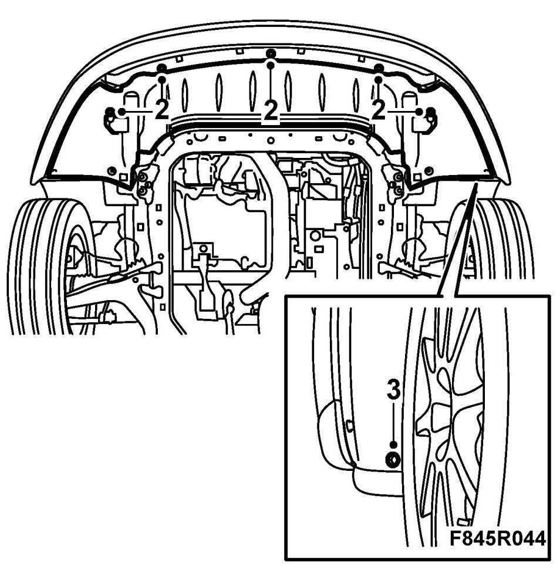
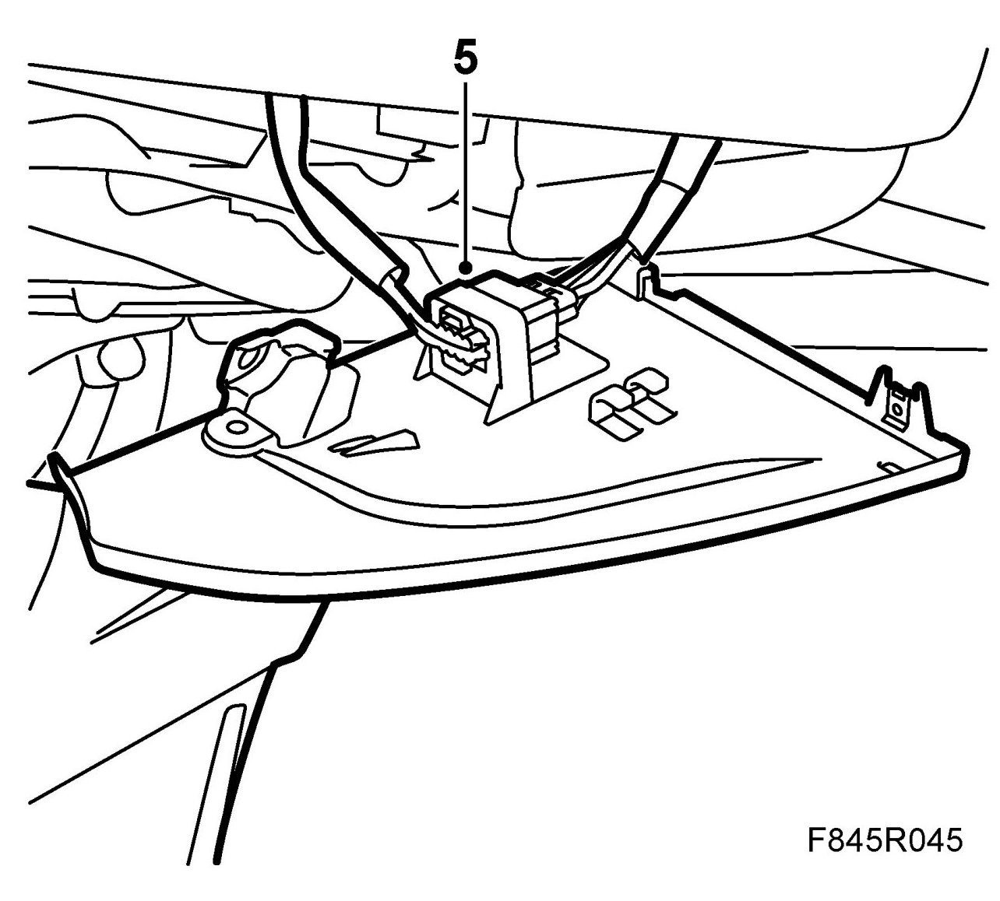
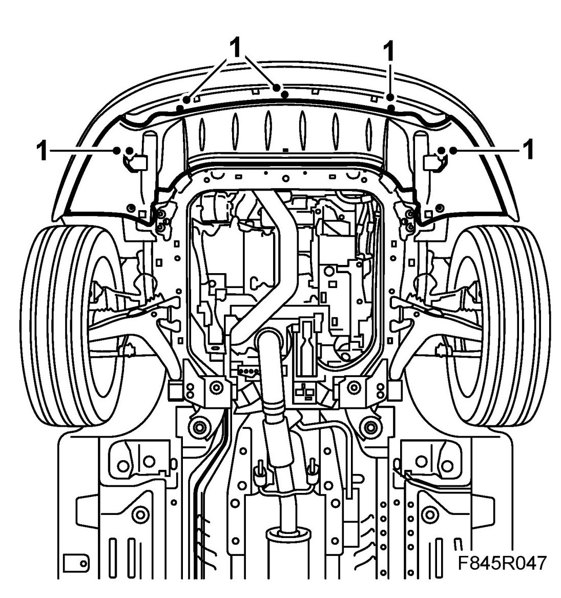
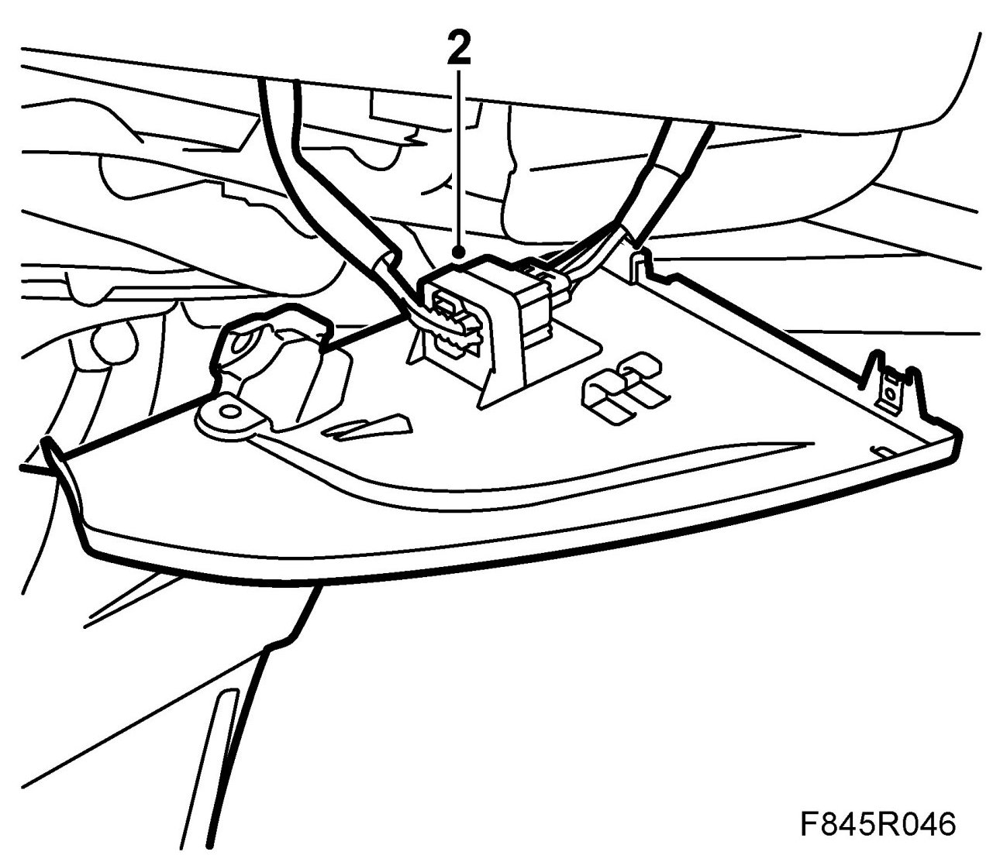
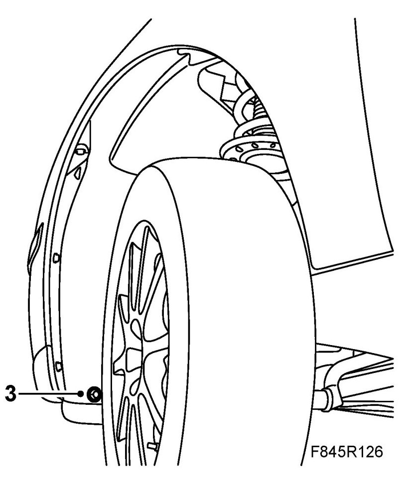

Front Spoiler Shield
Front Spoiler Shield
To remove
1. Raise the car.
2. Remove the spoiler shield bolts from underneath.

3. Remove the bolt from the wing liner.
4. Pull the spoiler shield rearwards to loosen it.
5. Unplug and remove the connector. Detach the washer hose if required.

To fit
1. Position the spoiler shield over the bottom part of the spoiler. Bend the bottom part of the spoiler slightly. Position the shield and fit the bolts.

2. Fit the bumper connector to the holder and, if relevant, the washer hose. Plug in the connector.

3. Fit the bolt to the wing liner.
